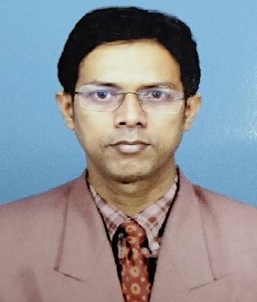
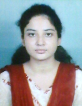
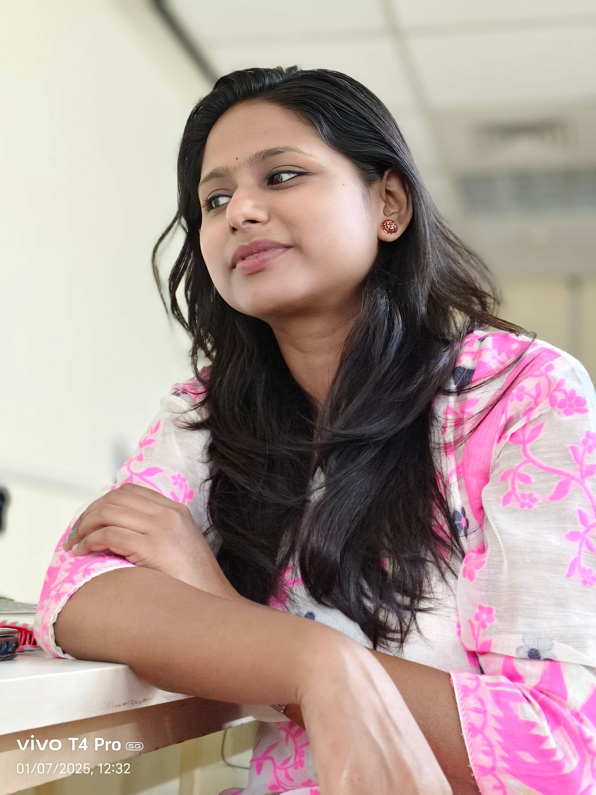

Computer Vision, Machine Learning, Deep Learning

Digital Geometry, Medical Image Processing, Deep Learning

Image Processing, Remote Sensing, Environmental Monitoring, Hazard Analysis, Deep Learning
Computer Vision, Deep Learning, Assistive System
Image Analysis, Deep Learning / Autism Spectrum Disorder Detection and Smart Assistance

Application of AI-ML in Atmospheric Science, Fog Prediction and Source Apportionment of Fog Chemicals using ML-DL
Techno Bengal Institute of Technology, Kolkata
Computer vision, Deep Learning, Medical Image Analysis